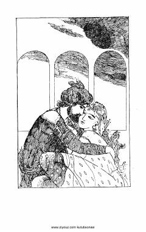

SSAlisher Navoiyning "Sab'ai sayyor" dostonining nasriy bayoni.
Buyuk o'zbek shoiri Alisher Navoiyning mashhur "Xamsa" dostonlaridan biri bo'lgan "Sab'ai sayyor" asarining nasriy bayoni. Kitobda Bahrom G'ur va uning yetti sayyoraga mos etta qasri haqidagi hikoyalar bayon etilgan.